Para elegir alguna Aplicación de Agregación de Contenido consulté Chat gpt, entre las opciones estaba Google Noticias, me llamó la atención puesto no estaba muy al tanto de este servicio de Google, me gustó que conservara la simpleza que tenía el buscador de Google de por si, así que lo elegí para el análisis.
Para poder recolectar la información de la tipografía y los colores utilizados en la página me puse a inspeccionar los elementos que la componían, también explorando el código con Ctrl+Shift+I .
Google noticias es un buscador desarrollado por la empresa Google, lanzado el servicio un 4 de septiembre del 2002. Se caracteriza por tener similitudes en su configuración general con el propio buscador de Google. además de conectarse a la actividad del usuario a través de la cuenta del correo.
El servicio se adapta a la localidad del usuario, pudiendo ofrecerle noticias locales de su correspondiente país. Ofreciendo una experiencia más cercana; a parte de poder compartir noticias más generales.
Al igual que en Google (el buscador), Google noticias tiene dos opciones para el tema de la página (claro-oscuro), siendo la paleta de colores en su mayoría escala de grises azulados, exceptuando un color que se utiliza como un medio por el cual se presenta la selección de un elemento.

Light 300 (12px)
Regular 400 (22px, 20px)
La tipografía "Product Sans", también conocida como Google Sans es una variación tipográfica de sans-serif diseñada por Google.
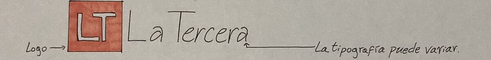Estándar de como aparece el nombre de los portales de noticias en el servicio.
Ciertos portales aparecen con sus propias tipografías y tamaño de las mismas (Mega noticias, el mostrador); resaltando debido a la discordancia que producen.
En la sección "Ciencia y Tecnología" se utiliza en varias noticias un lenguaje técnico que referente a su público objetivo se produce una comprensión en los conceptos abarcados, ya que deben ser entendidos en su propio nicho.

Smartphone: Teléfono Inteligente
Audífonos TWS 3e: Audífonos True Wireless Stereo (estéreo inalámbrico) tercera generación.
Para el encargo tanteé entre los posible elementos interactivos que ofrecía la página, como se dice navegué por la misma para ver que ofrecía. El sitio no tiene como tal un inicio de sesión o registro de usuario, pues el usuario se registra automáticamente con el correo de Google.
El ícono para abrir una búsqueda avanzada pasa a primera vista desapercibido, puesto a la simpleza del diseño. solo resaltando debido al contraste de grises de uno más claro con otro más oscuro que es el bloque de búsqueda, y que está posicionado a una esquina del mismo.
Para el siguiente paso no se avanza a otra pantalla, sino que se produce un extendimiento del bloque original de búsqueda, mostrando más opciones las cuales a pesar de aportar más elementos a la pantalla, no dejan de lado la simplicidad del diseño propio de la página. No sobrecargando la visión del usuario con lo que se presenta.
Al momento de mostrar los resultados de la búsqueda ahí se cambia de pantalla. Las noticias aparecen acompañadas con imágenes que abarcan un tamaño considerable e uniforme respecto a cómo estas se mostraban en la pantalla de inicio.

Al momento de seleccionar la sección (sin siquiera presionarla) las letras sutilmente cambian a blanco, iluminándose, resaltando en el espacio. La sección de temas es junto al buscador es la única constante entre los movimientos que se pueden llegar a hacer en la página.
Las noticias se agrupan de igual manera como en la sección de Noticias destacadas; llama la atención en como dentro del bloque se le da un mayor destaque a una noticia por sobre otras del mismo tema, no solo agrandándole el tamaño de la letra, sino también haciendo parte de su composición una imagen que está por encima del propio texto, acaparando primero lo atrapante de lo visual.
En la cobertura completa aparecen imágenes de un formato cuadrado, como si estuvieran recortadas, ya que no se percibe del todo bien la composición de las imágenes expuestas, creando cierta confusión y desconexión con lo que se está mirando.


El ícono de ajustes es más complejo a comparación al de búsqueda avanzada, su disposición en la página es similar, además como no hay mucho espacio entre el texto del tipo de noticia con este es mucho más fácil reconocerlo a simple vista.
Al igual que en la Actividad 1, no se cambia de pantalla sino que aparece un bloque de búsqueda, pero en este caso con su aparición también se crea un contraste que oscurece del espacio alrededor, dejando como mero protagonista al bloque.
El nombre de la ubicación viene acompañado con una imagen que haga una conexión del reconocimiento del lugar con el propio nombre del mismo, permitiendo una identificación. El azul ha estado más presente que en otras ocasiones, incluso con mayor intensidad para denotar ciertas opciones hechas, como el seguimiento del tema de las noticias locales de ciertos lugares.
Se puede navegar en la página con facilidad, cada parte de la misma la cual es interactiva se siente intuitiva; la única sección la cual me causó cierta dificultad fue la de Noticias locales, debido a la diferencia de disposición de elementos que me dieron cierta incertidumbre de como avanzar, siendo algo más de ensayo y error para entender la función de cada elemento; y algunos íconos como el de búsqueda avanzada, el cual es pequeño.
El diseño es bastante simple, algo propio de Google; y también no solo en la simplificación de las figuras, sino también en el propio texto, siendo las palabras utilizadas cortas y concisas cuando se refiere a lo que quiere dar a entender la página, esto permite que no haya una sobrecarga de información innecesaria y que el tiempo aplicado en la página se sienta cómodo y fluido a la hora de moverse por ella. Todo lo que se refiere a los bloques con noticias siempre van centrados y no abarcan todo el espacio de la pantalla, creando espacios "blancos" por los bordes, pero aún así con no abarcar todo el espacio posible hay un balance con el tamaño de la letra haciéndola comprensible, además de sin requerir un movimiento exagerado por parte de los ojos para seguir el hilo del texto presentado.
En cuanto a la aplicación ciertamente los elementos dispuestos que abarcan la pantalla son menores, habiendo un agrandamiento de la letra y disminución en detalles como mostrar el autor de la noticia o acortando oraciones (ej: Hace 1 día es menor 1d). También habiendo diferencia en la distribución de secciones, siendo más una adaptación del servicio Google noticias que una copia exacta del sitio web; ese aspecto no es negativo, pero quién esté ya acostumbrado a utilizar una de las interfaces se perderá un poco al utilizar la otra, puesto que algunas funciones no parecen estar y hay otras en una.
Varios elementos son utilizados de distinta manera, tales como las líneas que separan opciones individuales de un menú pueden ser ocupadas en otro menú para separar conjuntos de opciones, o para ser un indicador interactivo para rellenar con información; algo similar sucede con el formato para mostrar logos o imágenes que se utiliza una misma figura (un cuadrado) para presentar lo visual. Dentro de los elementos simples se busca utilizarlos de varias maneras lo que de cierta forma los llena de complejidad pues no solo se limitan a una función sino que se encuentran diversas posibilidades en que se pueden utilizar distintos elementos para compones un todo.
Alternativas de texto: El lenguaje que maneja es simple y neutral. El asistente de Google puede leer el texto solicitado.
Adaptable: El diseño del servicio se puede presentar de distintas formas (página web, aplicación; tema claro-oscuro) para una adaptabilidad del medio.
Distinguible: Facilite que los usuarios vean y oigan el contenido, separando el primer plano del fondo; hay una clara de separación de bloques y secciones del servicio.
Convulsiones y reacciones físicas: No parece que haya ningún elemento que provoque convulsiones y reacciones físicas.
Navegable: Proporciona diversas formas de navegar ya sea a través de una búsqueda avanzada por la página, o buscar alguna localidad para recibir noticias de ese lugar o buscando temas desde la sección kiosco de la app.
Modalidades de entrada: Se puede entrar por medio de internet, o por medio de la app de móvil.
Legible: Los textos y el vocabulario que emplean es legible y simple de comprender.
Predecible: Funciona de manera predecible para ofrecer una experiencia intuitiva.
Asistencia a la introducción de datos: Tiene unas breves guías al momento de interactuar con algún buscador dentro del servicio y pueden aparecer globos de esto cuando se refiere a alguna opción configurable.
Las WCAG (Web Content Accessibility Guidelines) busca facilitar el acceso con personas con discapacidad, con una serie de pautas (directrices) para la accesibilidad.
Parece que el uso del cursor dentro de la página es sumamente importante.
En algunas noticias la imagen que las acompaña está mal adaptada, deformandose de tal manera que es extraña a la vista.
En el caso de la aplicación, no se ha encontrado una deformación en la imagen sino que la calidad de algunas es inferior a la imagen de la noticia original.
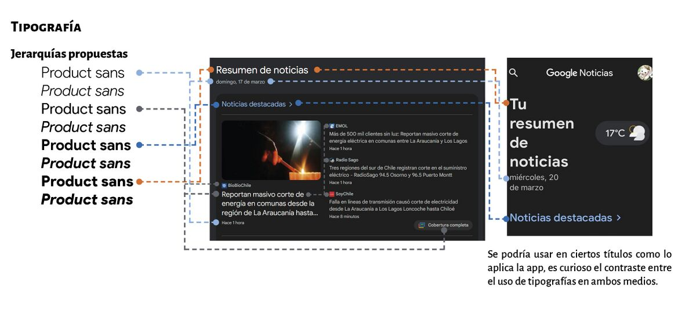La tipografía utilizada en el servicio y la que utiliza Google en general es Product Sans, pese a tener una amplia variedad de grosores a lo mucho pareciera que se utilizan dos a tres tipos sin mucha distinción entre sí. Eso hace que se vea muy monótona las interacción con la página, usar mayor variedad de grosores no solo podrían darle más variedad al servicio, sino que también podría reafirmar la jerarquía de los elementos relacionados con el texto.
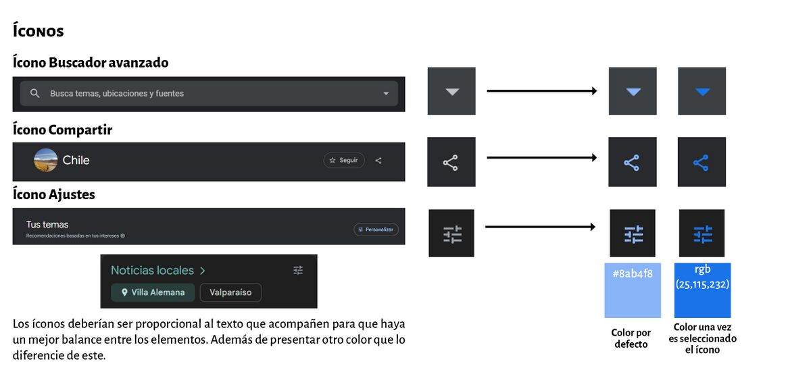Los íconos utilizados en la página tienen un diseño muy simple y además son de un tamaño demasiado pequeño, a primera vista podrían pasar desapercibidos. Para mejorarlos se podría agrandar el tamaño y cambiar el color de los mismos para que resalten. a un color propio de la paleta como un azul (#8ab4f8, rgb(25, 115, 232)); eso les dará su propio espacio para presentarse dentro de la pantalla.
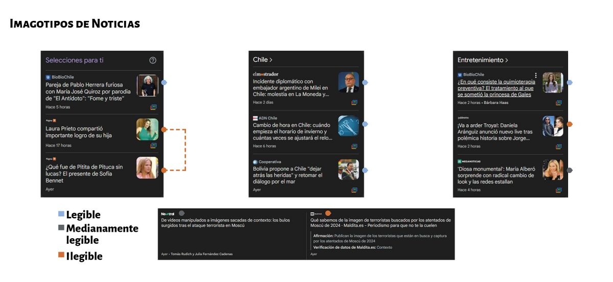Los logotipos de las noticias son inconsistentes entre sí, algunos mantienen la tipografía de la página de origen y otros se adaptan a la tipografía de Google Noticias (Product Sans). Los que mantienen la tipografía de origen suelen tener distintos tamaños y hasta a veces son incomprensibles debido a lo ilegible del texto. Por lo cual creo que es mucho mejor que todos se adapten al estilo de la página y tengan la misma tipografía para tener una experiencia de lectura mucho más cómoda.
 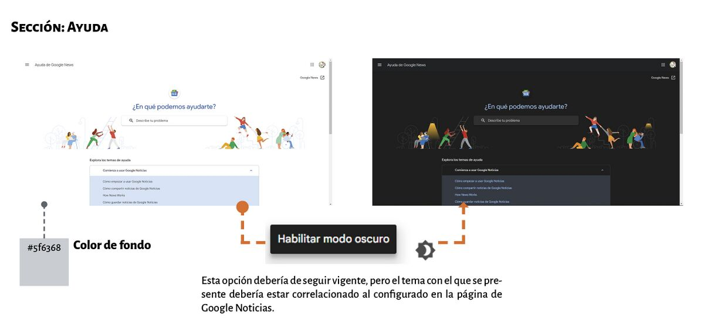
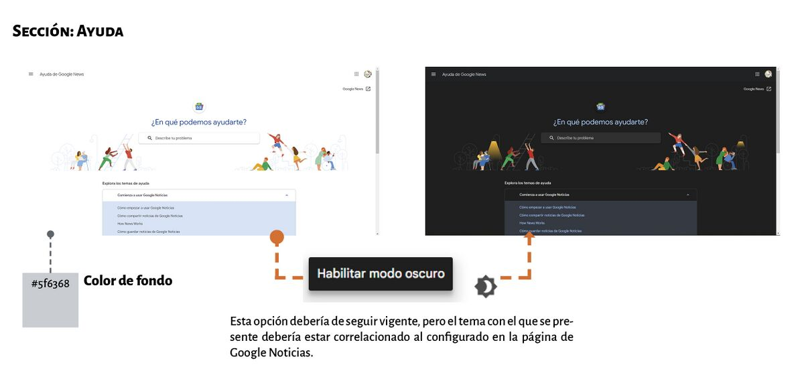
Al dirigirse al ícono “Ayuda” todas las opciones excepto la última llevan a páginas las cuales se pueden presentar con un tema claro, si el usuario anteriormente tenía configurado el tema oscuro, esto producirá un contraste que causará una molestia visual, por lo cual estas páginas deberían configurar el tema respecto al ya utilizado en el servicio, sea claro u oscuro; no teniendo que habilitarlo manualmente.
El tema claro debería tener matices más contrastados que permitan diferenciar entre los elementos, marcar la jerarquía y alivianar un poco la vista de tanta luz, el mero hecho de cambiar el color del fondo permite que haya una mayor profundidad en el espacio de la página.
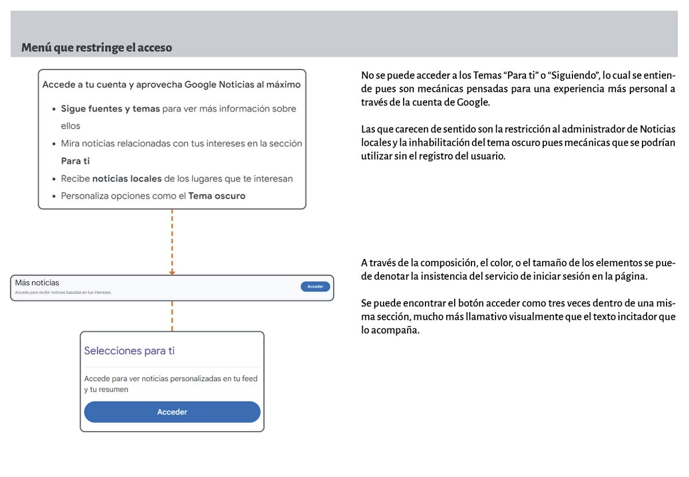Varias opciones se restringen dentro de la página al no iniciar sesión; las opciones que se restringen la mayoría son las que pueden personalizar la búsqueda de noticias. La administración de noticias locales y ciertas opciones en la configuración del servicio (cambiar el tema y modificar la unidad de temperatura) deberían estar habilitadas sin que el usuario inicie sesión, mínimamente para que se utilicen en el tiempo de estancia en la página, una vez el usuario salga del servicio (página o app) se reinicie nuevamente.
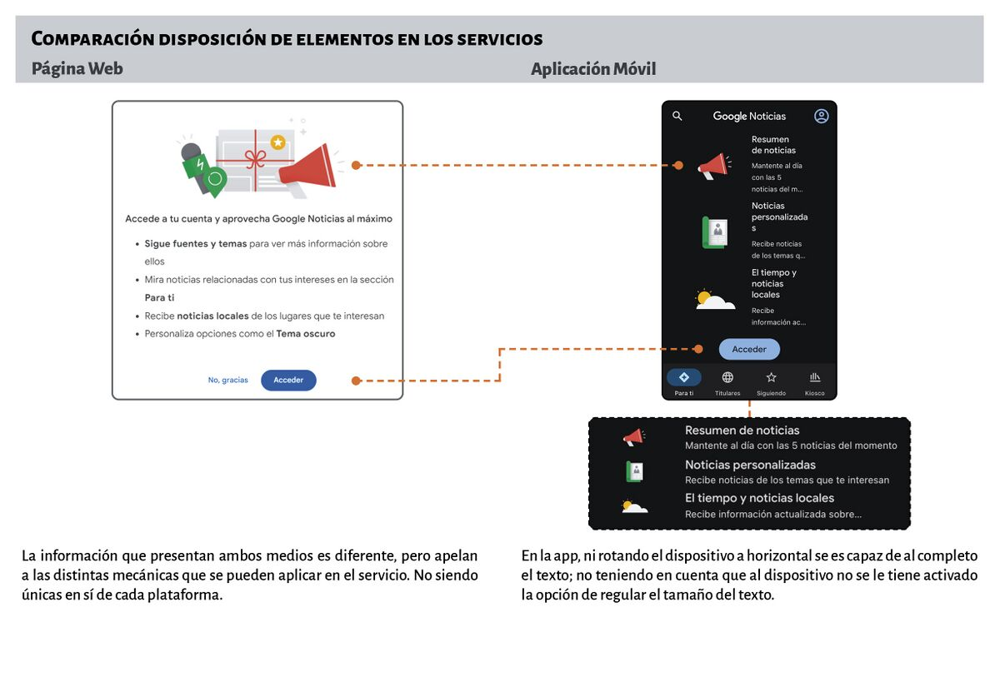La opción de configuración del tamaño del texto por alguna razón solo está habilitada en ciertos dispositivos, esto puede crear un desconcierto en el usuario, además que es inconveniente que un servicio que administra noticias tenga este problema con algunos móviles.
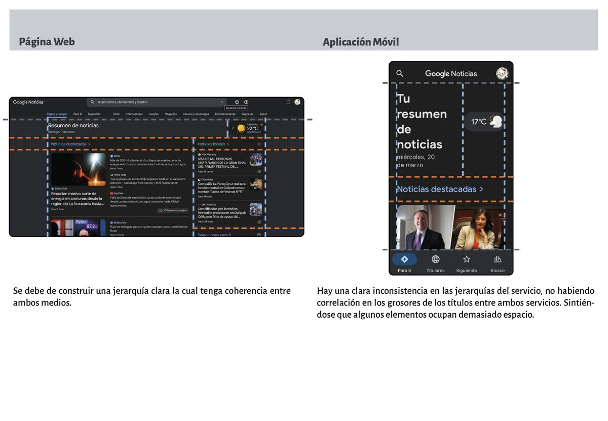La idea al ver estas irregularidades en la disposición de los elementos en los diferentes medios, es recrear una grilla en que se permita un orden más coherente y sólido. para aquello se deberá reducir o agrandar el tamaño de algunos elementos incluyendo a esto el propio texto que se presenta para reposicionar el espacio.
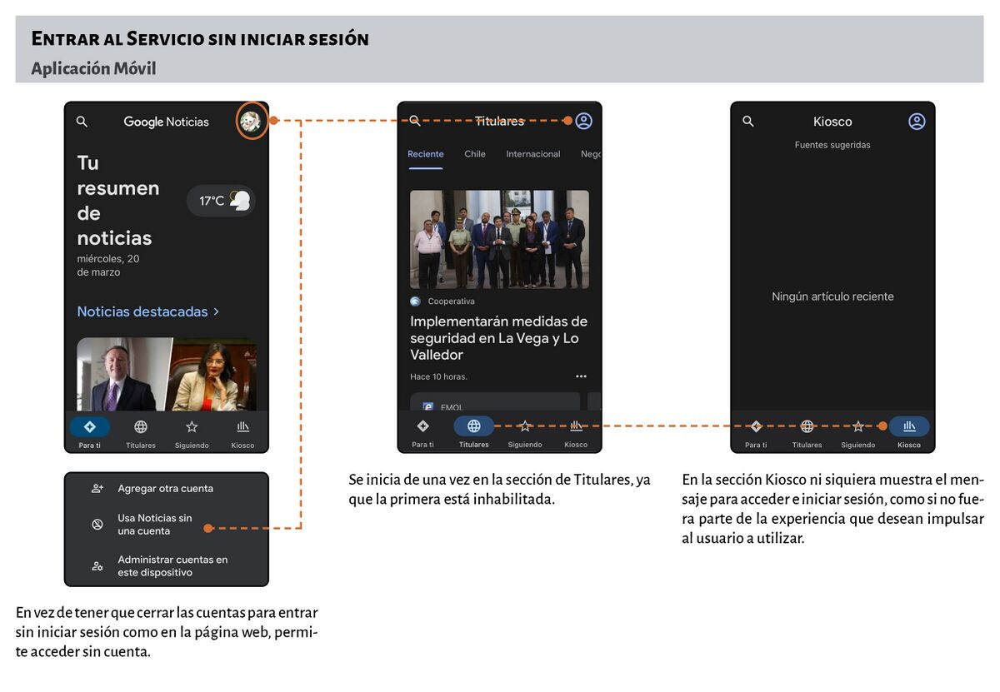Los canales que fueran de utilidad deberían moverse a la sección de Titulares, con el respectivo tema que tuvieran en común, de una forma similar a como se visualiza en la página web o en Noticias locales en la aplicación.
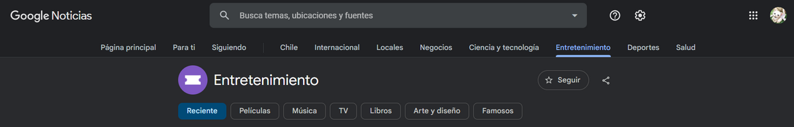 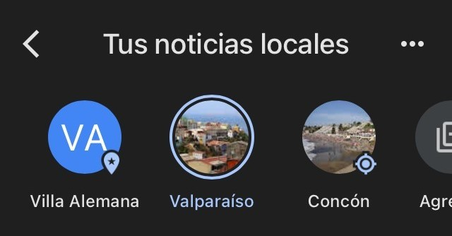